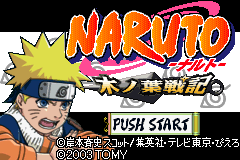
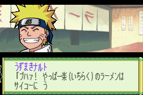

Naruto - Konoha Senki (Japan)
Stateless / Passcode gbakit Built-In VRAM Tile Sheet 💾 MultiBoot 🎮 4P Link
Cartridge Identity
- Game Code
AUEJ(FamilyAUE)- Header Title
NARUTOKONOHA- Maker / Revision
DA/ rev0- ROM Size
- 8.0 MiB (8,388,608 B)
- Save Media
None / Unknown- SHA-256
c752e859f94492af15f7d89295de671545f07bd5eed64a95094955bdfe74a6be- Engine / SDK Group
comm-056(3 families)
Screenshots


Link Cable & Multiplayer Communications
This title contains detected communication capabilities: 💾 MultiBoot 🎮 4P Link.
Detailed protocol specifications, SIO registers, Joybus commands, and MultiBoot sequences are documented in the Link & Multiplayer Reference.
- Multi-Player SIO (4P)
- 16-bit ring network · SIOCNT (
0x04000128) literals:0x06208c,0x06210c,0x062138· SIODATA32/SIOMULTI0 (0x04000120) literals:0x0624a4 - Single-Cart MultiBoot
- Single-Cartridge MultiBoot (Download Play) client/server handler · Thumb SWI 0x25 (
0xDF25):0x0cfc4e,0x12b220,0x33eeae,0x34efd2
Battery Save Support in gbakit
Built-in definition (AUEJ)
gbakit save verify AUEJ save.sav
gbakit save decode AUEJ save.sav
gbakit save fix AUEJ damaged.sav -o repaired.savROM Assets, Compression & Audio
- BIOS Compression
- LZ77 (
0x10): 818 streams · RLE (0x30): 0 streams - ROM Pointer Tables
- 173 tables (5 pointing to validated compressed streams)
- SDK Backup Tags
SRAM_F_V103- VRAM / Palette Snapshot
- 840 non-zero 8×8 tiles · 16 palettes · Direct ROM matches: 0 VRAM blocks, 1 palette blocks

Text, Fonts & Scene Data
- Primary Text Encoding
- LZ77-compressed ASCII (
200Shift-JIS runs ·1LZ77 ASCII blocks) - Font & VWF Indicators
- VWF Width Table 1bpp Font · BIOS SWIs: BitUnPack
0x10:16· LZ770x11/12:34· Huffman0x13:3· RLE0x14/15:18 - Scene & Packaging
51ROM pointer tables (≥32 entries,2≥200) ·0relativeu32TOCs ·86OAM metasprite hits
Hardware MMIO Subsystems
ppu_display0x809902csave_bus_sram_flash0x8068684
Regional Variants & Revisions (Family AUE)
- Naruto - Konoha Senki (Japan) (Rev 1) (
AUEJ, 8 MiB)